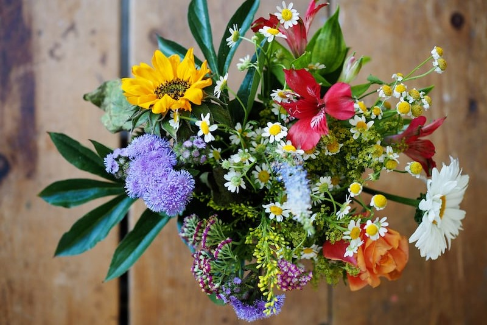

Our Selection
Bespoke bouquets.
We provide a wide range of flowers ideal for events, decoration, or simply as a gift to a loved one. Our bouquets are grown and cared for by our well commended gardeners and stay trendy across all seasons.
Our Range
Roses
A bouquet of our finest roses; home grown, hand picked. A simple yet elegant gift perfect for those fancy occasions.
£39
A bouquet of our finest roses; home grown, hand picked. A simple yet elegant gift perfect for those fancy occasions.
£39

Premium Assortment
No matter the season, this carefully picked assortment of flowers serves as an ideal gift to a loved one, or as the perfect touch to liven up your surroundings.
£42
No matter the season, this carefully picked assortment of flowers serves as an ideal gift to a loved one, or as the perfect touch to liven up your surroundings.
£42

White Tulips
Grown in our own gardens, these tulips are a beautiful and unique gift for anyone. Whether going to a wedding, or placing them in a vase, these tulips symbolise elegance.
Grown in our own gardens, these tulips are a beautiful and unique gift for anyone. Whether going to a wedding, or placing them in a vase, these tulips symbolise elegance.
£29